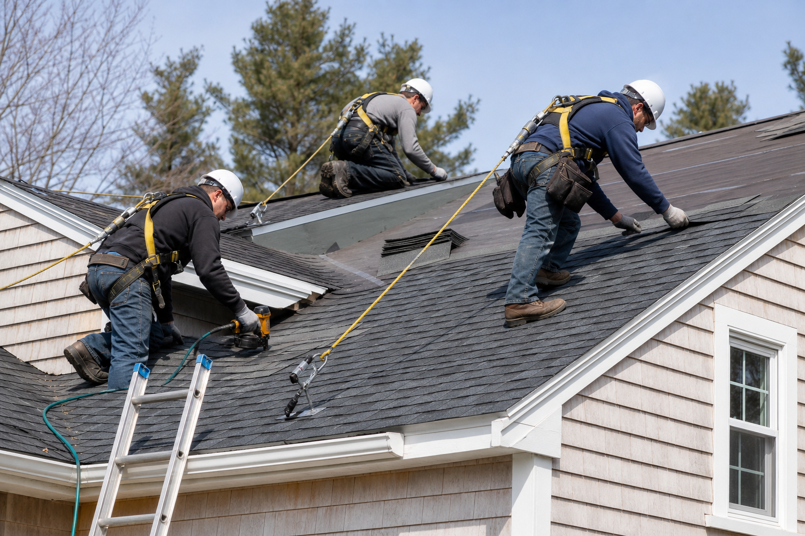

Experience
40 combined years in roofing & flooring.
Ruby Ridge brings together a combined forty years of hands-on roofing and flooring experience. That background informs how we plan jobs, solve problems and keep the work moving.
Why Hire Ruby Ridge
40Combined years of roofing & flooring experience
2Partner-led approach with direct accountability
3Core service areas: roofing, flooring and painting


What experience changes
Details get noticed earlier.
✓
Planning
Material flow, roof access, weather and sequencing matter before installation starts.
✓
Problem solving
Experienced tradespeople know that every structure brings its own conditions.
✓
Finish quality
Clean lines, details, transitions and cleanup are part of the job—not extras.